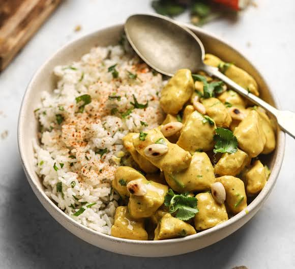

Ensalada
Una opción refrescante y saludable para cualquier día.
resetas para reuniones familiares.
Una opción refrescante y saludable para cualquier día.
Un clasico plato mexicano.

Un plato lleno de sabor y especias.
Hola Soy Juan fernando , un apasionado/a de la cocina casera y me encanta compartir mis recetas familiares contigo. En esta pagina encontrarás desde platos sencillos para el día a día hasta recetas más elaboradas para ocasiones especiales. ¡Espero que disfrutes cocinando conmigo!